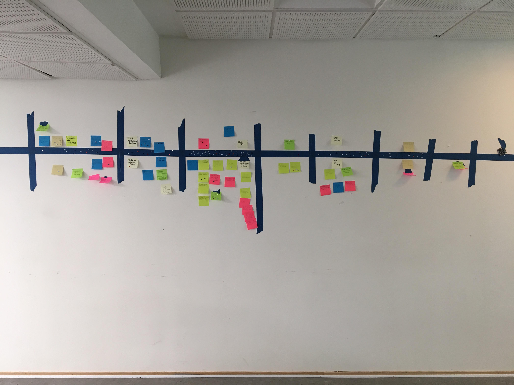

Dokumentation af empiri
Data-mining
Hvad bruger du din smartphone til?
Hvad mangler du på KEA?
Hvad glæder du dig mest til i din gang på KEA?
Hvilke erfaringer har du med at arbejde eller studere i udlandet?
Hvor møder du de internationale studerende på KEA?
Hvilke fordele kan du se ved at arbejde mere sammen med international linje på MMD?
Hvordan kan vi arbejde på tværs af linjer på MMD?
Experience map
Problemstilling
“Multimediedesignstuderende på den danske og den internationale linje har ikke meget med hinanden at gøre, det vil KEA gerne gøre noget ved. Men hvordan kan en KEA app understøtte dette? KEA app’en må også gerne forbedre de studerendes muligheder for at få et arbejde efter endt uddannelse.”
Problemformulering
Der er brug for et forum, hvor danske og internationale linjer kan mødes og hjælpe hinanden, og samtidig skabe relationer på kryds og tværs, så der bliver skabt et bedre studiemiljø!